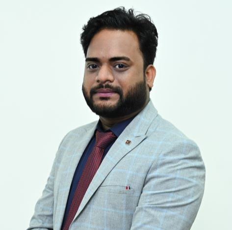

Dr. Arun Prakash
Program Director & Assistant Professor

Program Director & Assistant Professor
Dr. Arun Prakash is a distinguished academician and accomplished professional, currently serving as a Program Director & Assistant Professor at the Dadasaheb Phalke International Film School, MIT World Peace University, Pune. With expertise in Photography, Cinematography, Qualitative Research, and Online Content Creation, Dr. Prakash seamlessly integrates theoretical knowledge with practical application, equipping students for successful careers in the dynamic fields of media and film. A UGC NET and Junior Research Fellowship (JRF) qualified scholar, Dr. Prakash earned his PhD in Film Studies from Banaras Hindu University (BHU), Varanasi. He also holds a BA (Hons.) and MA in Mass Communication from BHU, specialising in Television, Radio, and Films. As a testament to his leadership and global engagement, he represented India as part of the official delegation at the 2017 World Festival for Youth & Sports (WFYS) in Russia, under the Ministry of Youth Affairs and Sports, Government of India. Dr. Prakash’s professional journey spans more than seven years, including three years in the media industry and more than four years in academia after PhD. Before joining MIT-WPU, he served as an Assistant Professor at Chandigarh University, where he excelled in both academic and administrative roles. His contributions included coordinating admissions, establishing advanced multimedia labs, and setting up a community radio station. With a robust industry background in Photography, Cinematography, and Graphic design, Dr. Prakash brings practical insights that resonate with his students. One of Dr. Prakash's most significant achievements at MIT-WPU has been the establishment of the Dadasaheb Phalke International Film School (DPIFS). Starting with minimal resources and a small team, he showcased exceptional leadership, strategic vision, and resource management, transforming DPIFS into a thriving academic institution. Today, the school is recognised for its comprehensive academic programs, cutting-edge infrastructure, and commitment to cinematic excellence. Dr. Prakash’s scholarly contributions are equally notable. He has presented and published numerous research papers in Scopus and UGC Care-listed journals and book chapters. He is also the recipient of an Indian patent for his research on the Impact of Digital and Social Media on Customer Behavior, underscoring his commitment to academic innovation. A regular participant in Faculty Development Programs (FDPs), seminars, and conferences, Dr. Prakash remains at the forefront of advancements in film and media education. As a passionate educator and mentor, Dr. Prakash fosters a learning environment that encourages critical thinking, creative problem-solving, and collaboration. His dedication to academic excellence, coupled with his industry experience, has made him a pillar of MIT-WPU’s academic community. Through his vision and relentless efforts, Dr. Prakash continues to shape the next generation of media and film professionals, ensuring they are well-prepared to meet the demands of an ever-evolving industry.
Films and New Media
Profiles